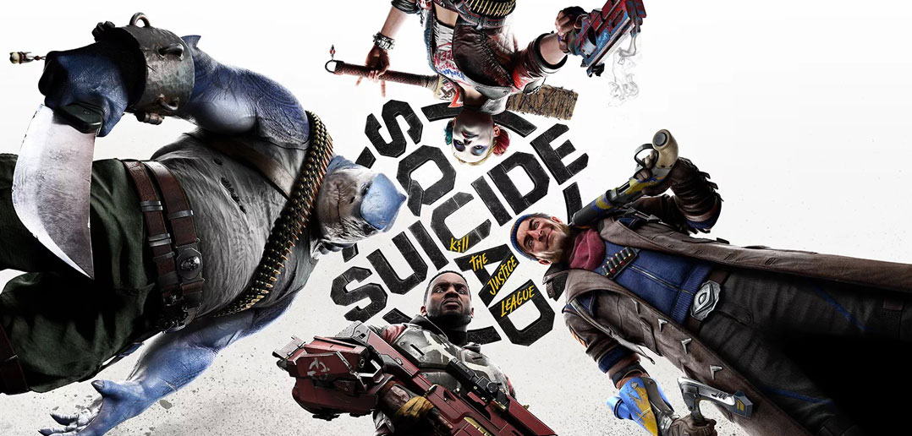
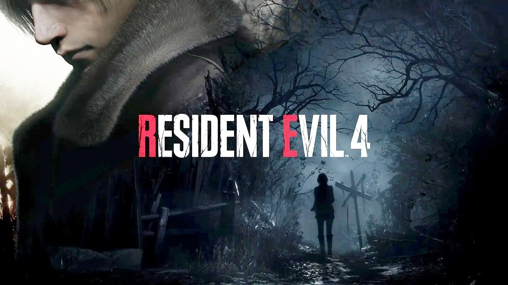
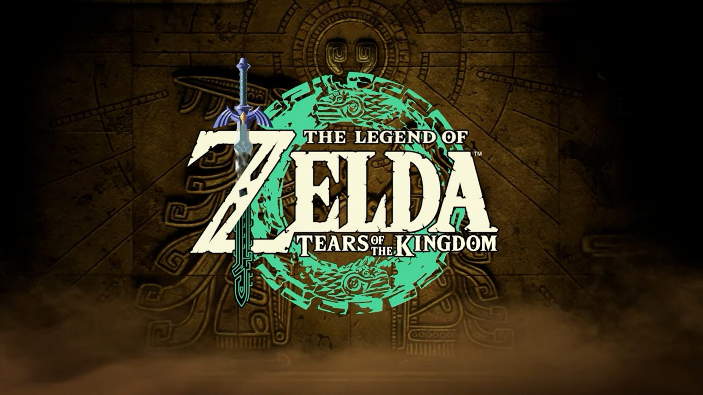
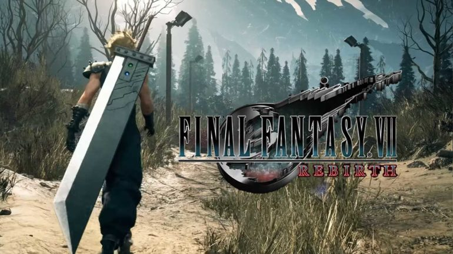
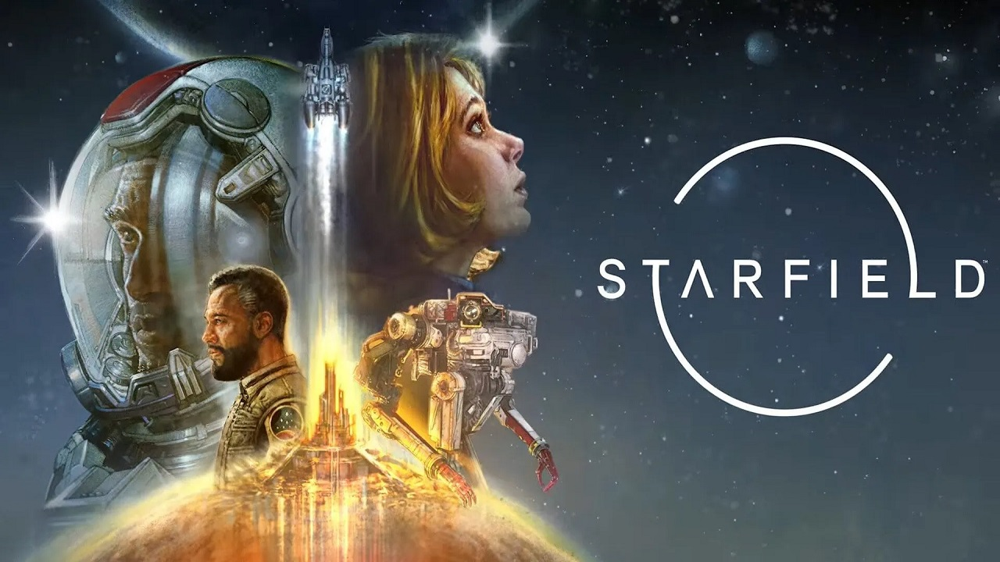

OS JOGOS MAIS ESPERADOS DE 2023
Seguindo a mesma tendência do ano anterior, 2022 chamou atenção na indústria dos games por uma triste razão: adiamentos de lançamentos. As razões foram muitas, mas o fato é que vários títulos previstos para o ano passado continuam firmes e fortes dentre os “mais esperados”. Tudo indica que 2023 será o ano derradeiro para eles, então o negócio é aguardar e torcer.
10 – Suicide Squad: Kill the Justice League
Previsão de lançamento: 26 de maio de 2023 – PC, PS5 e Xbox Series
Começamos o Top 10 com um título curioso: no papel dos anti-heróis Arlequina, Capitão Bumerangue, Tubarão-Rei e Pistoleiro, o jogador terá que lutar contra os heróis mais famosos da DC, controlados pelo maligno Brainiac. O game já sofreu com um adiamento, mas deve chegar no prazo com muita ação, aventura, belos visuais e um roteiro digno das melhores histórias em quadrinhos.
Assista ao Trailler9 – Resident Evil 4 Remake
Previsão de lançamento: 24 de março de 2023 – PC, PS5, Xbox One e Series
O nono lugar da lista tem a difícil tarefa de recontar uma das melhores aventuras de todos os tempos para os videogames. Conforme divulgado até agora, ele seguirá a receita padrão de um bom remake, mantendo a base de sucesso do original, temperada com novidades como produção de primeira e jogabilidade moderna. Considerando o sucesso dos últimos títulos da franquia, a possibilidade de sucesso é alta.
Assista ao Trailler8 – Assassin’s Creed Mirage

Previsão de lançamento: 2023 – PC, PS4, PS5, Xbox One e Series
Depois de uma sequência de jogos de mundo aberto com direito a muita exploração e elementos de RPG, a série dos assassinos voltará às suas origens. O game se passará em Bagdá, onde o protagonista evolui de um mero ladrão até um membro da Sociedade dos Assassinos. Com foco em mecânica de furtividade e parkour, o título também vai comemorar os 15 anos de uma das franquias mais bem sucedidas dos videogames.
Assista ao Trailler7 – Star Wars Jedi: Survivor

Previsão de lançamento: 17 de março de 2023 – PC, PS5 e Xbox Series
Sequência do bem recebido Fallen Order, o game continuará as aventuras de Cal Kestis, agora dez anos após a Ordem 66, que liquidou a maior parte dos Jedi do universo. O protagonista precisa escapar do implacável Império, que conta com recursos cada vez mais perigosos. Por outro lado, o guerreiro terá à disposição novas habilidades ao utilizar a Força e os clássicos sabres de luz.
Assista ao Trailler6 – Street Fighter 6

Previsão de lançamento: 2 de junho de 2023 – PC, PS4, PS5 e Xbox Series
Justamente na sexta posição, temos a chegada da sexta iteração do jogo de luta mais famoso da indústria. O game trará ao menos seis personagens novos e que se unirão a figuras carimbadas como Chun-Li, Ryu e Ken. Os lutadores recorrentes estarão mais experientes, então podemos esperar várias mudanças visuais e funcionais. Trazendo várias novidades para as lutas e incorporando-as a elementos clássicos, a perspectiva é de um ótimo lançamento.
Assista ao Trailler5 – Final Fantasy XVI

Previsão de lançamento: 22 de junho de 2023 – PS5
Primeiro título da franquia nessa lista, a famosa série de RPGs tem tudo para receber um dos seus maiores sucessos. Um dos games mais prejudicados pela pandemia, ele mostrará um mundo fantástico composto por seis nações, cada uma delas permeada por magia. O jogador estará no controle de Clive Rosfield, um dos humanos que podem invocar criaturas poderosas chamadas Eikon, que busca vingança pela destruição de seu reino natal.
Assista ao Trailler4 – The Legend of Zelda: Tears of the Kingdom
Previsão de lançamento: 12 de maio de 2023 – Switch
Depois de muita especulação e um adiamento, a esperada continuação do aclamado Breath of the Wild finalmente deve chegar ao híbrido da Nintendo. Não se sabe muito sobre como será o game, mas o material divulgado até agora aponta para uma produção muito semelhante ao predecessor. Uma das novidades deve ficar por conta das ilhas flutuantes, abrindo caminho para novos desafios espalhados pelos céus.
Assista ao Trailler3 – Final Fantasy VII Rebirth
Previsão de lançamento: Final de 2023 – PS5
O terceiro lugar, e segundo título da franquia neste Top 10, fica com a continuação da história de Cloud e companhia, cujo Remake de 2020 alcançou um grande sucesso. Prometido como segunda parte da trilogia remake, o game deverá trazer gráficos ainda mais impressionantes e acontecimentos inéditos em relação ao original. Pouco se sabe ainda sobre o título, mas espera-se que os competentes combates em tempo real continuem, assim como a história envolvente e o carisma original.
Assista ao Trailler2 – Marvel’s Spider-Man 2
Previsão de lançamento: Último quadrimestre de 2023 – PS5
A sequência da muito bem-sucedida aventura de Peter Parker e do spin-off de Miles Morales promete muito, embora ainda não tenhamos muitas informações sobre ela. Já é confirmado que ambos os heróis aracnídeos participarão do game, assim como que o vilão principal será o perigoso Venom. Mesmo sem maiores detalhes, assim como os títulos anteriores, a expectativa é grande devido ao potencial do título.
Assista ao Trailler1 – Starfield
Previsão de lançamento: Primeiro semestre de 2023 – PC e Xbox Series
Enquanto os donos do PlayStation têm vários games exclusivos programados para 2023, o mesmo não pode ser dito para o caso do Xbox. A exceção fica por conta do primeiro lugar do Top 10, e garanto que a liderança não é só por isso. Tido como um “Skyrim no espaço sideral”, o game trará uma exploração intergaláctica por volta do ano 2330, após uma grande guerra. No papel de um explorador espacial, o jogador construirá seu personagem e sua história em meio a inúmeros planetas e alienígenas.
Assista ao TraillerPostagens recentes
TOP 10 MELHORES PROFISSÕES DE TECNOLOGIA PARA 2023
Você está em busca de um emprego ou recolocação profissional em 2023? A área de tecnologia da informação continua em alta, com muitas ofertas de vagas e bons salários. Confira a seguir o top 10 melhores profissões de tecnologia para 2023. Leia mais